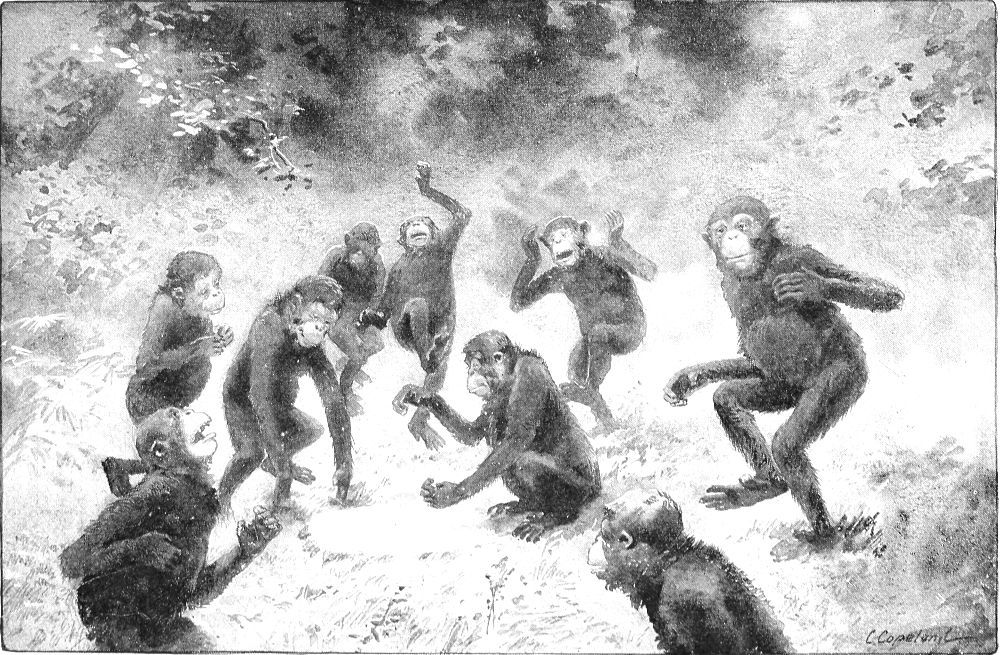

Physical Qualities of the Chimpanzee—His Social Habits—Mental Characteristics
Physically considered, the chimpanzee very closely resembles man, but there are certain points in which he differs both from man and from other apes. We may notice a few of these points. The model of the ear of the chimpanzee closely resembles that of man, but the organ is larger in size and thinner in proportion. It is very sensitive to sound, but dull to touch. The surface is not well provided with nerves. He cannot erect his ear, as most animals do, by the use of the muscles at the base; but, like the human ear, the muscles are useless, and in this respect the ear is fixed and helpless.
The hand of the chimpanzee is long and narrow. The finger bones are larger, in proportion to their size, than those of the human hand. One thing peculiar to the hand of the chimpanzee is that the tendons inside of the hand (those called the flexors), which are designed to close the finders, are shorter than the line of the bones. On this account the fingers of the ape are always held in a curve. He cannot straighten them. This is probably due to the habit of climbing, in which he indulges to such a great extent. He also indulges in the practice of hanging suspended by the hands. In making his way through the bush he often swings himself by the arms from bough to bough. Sometimes he suspends himself by one arm, while he uses the other to pluck and eat fruit. This characteristic is transmitted to the young, and is found in the first stages of infancy. The thumb is not truly opposable, but is inclined to close towards the palm of the hand. It is of little use to him. His nails are thick, dark in color, and not quite so flat as those of man.
The great toe, instead of being in line with the others, projects at an angle from the side of the foot, something after the manner of the human thumb. The foot itself is quite flexible and has great prehensile power. In climbing, and in many other ways, it is used as a hand. The tendons in the sole of the foot are equal in length to the line of the bones, and the digits of the foot can be straightened; but from the habitual use of them in climbing, the ape is predisposed to close the digits, wherefore the foot is naturally inclined to curve into an arch, especially in the line of the first and second digits.
His habit of walking is peculiar. The greater part of the weight is borne upon the legs. The sole of the foot is placed almost flat on the ground, but the pressure is greatest along the outer edge, in the line of the last digit. This is easily noticed where he walks over plastic ground. In the act of walking he always uses the hands, but he does not place the palms on the ground. He uses the backs of the fingers instead. Sometimes only the first joints or phalanges, resting upon the nails, are placed on the ground. At other times the first and second joints are used. I have seen one specimen that, when walking, employed the backs of all his fingers, from the knuckles to the nails. The integument on these parts is not callous, like that of the palm. The color pigment is distributed the same as on other exposed parts of the body. These facts show that the weight of the body is not borne on the fore limbs, as it is in the case of a true quadruped, but indicate that the hand is only used to balance the body while in the act of walking and to shift the weight from foot to foot. The weight is, therefore, not equally distributed between the hands and the feet, and the animal cannot truly be said to be a quadruped in habit.
His waddling gait is caused by his short legs, stooping habit, and heavy body. All animals having stout bodies and short legs are predisposed to a waddling motion, which is due to the wide angle between the weight and the changing center of gravity. This motion is more conspicuous in bipeds than in quadrupeds, because the base supporting the weight is reduced to a single point.
The chimpanzee is neither a true quadruped nor a true biped, but combines the habits of both. It appears to be a transition state from the former to the latter. Vestiges of this mixed habit are still to be found in man. In the act of walking his arms alternate in motion with his legs. This suggests the idea that he may have had, at some time, a similar habit of locomotion. Such a fact does not necessarily show that he was ever an ape, but it does point to the belief that he has once occupied a horizon in nature like that now occupied by the ape, and that having emerged from it, he still retains traces of the habit. This peculiarity is still more easily observed in children than in adults. In early infancy all children are inclined to be bow-legged. In their first efforts at walking they invariably press most of their weight on the outer edge of the foot and curve the toes inward, as if to grasp the surface on which the foot is placed. The instinct of prehension cannot be mistaken. It differs in degree in different races, and is vastly more pronounced in negro infants than in white ones.
There is another peculiar feature in the walk of the chimpanzee. The arms and legs do not alternate in motion with the same degree of regularity that they do in man or quadrupeds. This ape uses his arms more like crutches. They are moved forward, not quite, but almost at the same instant, and the motion of the legs is not at equal intervals. To be more explicit: the hands are placed almost opposite each other; the right foot is advanced about three times its length; the left foot is then placed about one length in front of the right; the arms are again moved; the right foot is again advanced about three lengths forward of the left; and the left again brought about one length in front of that. The same animal does not always use the same foot to make the long stride. It will be seen by this that each foot moves through the same space, and that, in a line, the tracks of either foot are the same distance apart; but the distance from the track of the right foot to that of the left is about three times as great as the distance from the track of the left foot to that of the right. Or the reverse may be the case. The distance from the track of either foot to the succeeding track of the other is never the same between the right and left tracks, except where the animal is walking at great leisure.
There is, perhaps, no animal more awkward than the chimpanzee, when he attempts to run. He sometimes swings his body with such force between his arms as to lose his balance and fall backward on the ground. Sometimes when he rights himself again, he is half his length backward of his starting point.
The chimpanzee is doubtless a better climber than the gorilla. He finds much of his food in trees; but he is not, in the proper sense of the term, arboreal. To be arboreal, the animal must be able to sleep in a tree or on a perch. The chimpanzee cannot do so. He sleeps the same as a human being does. He lies down on his back or side, and frequently uses his arms for a pillow. I do not believe it possible for him to sleep on a perch. He may sometimes doze in that way, but the grasp of his foot is only brought into use when he is conscious. I have often known Moses to climb down from the trees and lie upon the ground to take a nap. I never saw him so much as doze in any other position.
I may here call attention to one fact concerning the arboreal habit. There appears to be a rule to which this habit conforms. Among apes and monkeys the habit is in keeping with the size of the animal. The largest monkeys are found only among the lowest trees, and the small monkeys among the taller trees. It is a rare thing to see a large monkey in the top of a tall tree. He may venture there for food or to make his escape, but it is not his proper element. The same rule appears to hold good among the apes. The gibbon has the arboreal habit in a more pronounced degree than any other true ape. The orang appears to be next; the chimpanzee comes in for third place, and the gorilla last. It must not be understood that all of these apes do not frequently climb, even to the tops of the highest trees; but that is not their normal mode of life, any more than the top of a mast is the habitual place for a sailor on a ship.
The chimpanzee is nomadic in habit, and, like the gorilla, seldom or never passes two nights in the same spot. As to his building huts or nests in trees or elsewhere, I am not prepared to believe that he ever does that. For months I hunted in vain and made diligent inquiry in several tribes, but failed to find a specimen of any kind of shelter built by an ape. I do not assert that it is absolutely untrue that he does this, but I have never been able to obtain any evidence of it, except the statement of the natives. On the contrary, certain facts point to the opposite belief. If the ape built himself a permanent home, the natives would soon discover it and there would be no difficulty in having it pointed out. If he built a new one every night, however rude and primitive it might be, there would be so many of them in the forest that there would be no difficulty in finding them. The nomadic habit plainly shows that he does not build the former kind, and the utter absence of them shows that he does not build the latter kind. The whole story appears to be without foundation.
In addition to these facts, one thing to be noticed is that few or none of the mammals of the tropics ever build any kind of home. The animals that in other climates have the habit of burrowing do not appear to do so in the tropics, This is due, no doubt, to the warm climate, in which they are not in need of shelter. Of course birds and other oviparous animals build nests, as they do elsewhere. The period of incubation makes this necessary.
The longevity of these apes is largely a matter of conjecture, but from a cursory study of their dentition and other facts of their development, it appears that the male reaches the adult stage at an age ranging from eight to ten years, while the female matures between six and eight. These appear to be the periods at which they pass from the state of adolescence. Some of them live to be perhaps forty years of age, or upwards, but the average life is probably not more than twenty-one to twenty-three years. The average of life is, doubtless, more uniform with them than with man. These figures are not mere guesswork, but are deduced from reliable data.
The period of gestation in both these apes is a matter that cannot be stated with certainty. Some of the natives say that it is nine months, while others believe that it is seven months or less. There are some facts to support each of these claims, but nothing is quite conclusive. The sum of the evidence that I could find rather points to a term of four and a half months, or thereabouts, as the true period. During the months of January and February the male gorillas are vociferous in their screaming, the young adults separate from the families, and other things indicate that this is the season of pairing and breeding. They may not be strictly confined to this period, but the inference that they are so is well founded. It is quite certain that the season of bearing the young is from the beginning of May to the end of June. It is about this time that the dry season begins, and it continues for four months. It would appear that nature has selected this period of the year because it is more favorable for rearing the young. During this season food is more abundant and can be secured with less effort. The lowlands are drier, and this enables the mother to retire with her young to the dense jungle, where she is less exposed to danger than she would be in the more open forest. It is uncertain whether or not the periods are the same with both apes. Native reports differ on this point. But it is probable that they are the same. The average of this season is about four and a half moons, or eighteen weeks.
From a social point of view the chimpanzee appears to be of a little higher caste than other apes. In his marital ideas he is polygamous, but is in a certain degree loyal to his family. The paternal instinct is a trifle more refined in him than in other simians. He seems to appreciate better the relationship of parent and child and to retain it longer than others do. Most male animals become estranged from their young and discard them at a very early age. The chimpanzee keeps his children with him until they are old enough to go away and rear families of their own.
The family of the chimpanzee frequently consists of three or four wives and ten or twelve children, with one adult male. There are known cases in which two or three adult males have been seen in the same family, but each one having his own wives and children. In such an event there seems to be one who is supreme. This fact suggests the idea that among them a form of patriarchal government prevails. The wives and children do not apparently question the authority of the patriarch or rebel against it. The male parent often plays with his children and is seemingly very fond of them.
There is one universal error that I desire here to correct. It is the common idea that animals are so strongly possessed of the paternal instinct that they nobly sacrifice their own lives in defense of their young. I do not wish to dispel any belief that tends to dignify or ennoble animals, for I am their friend and champion. But truth demands that this statement be qualified. It is quite true that many have lost their lives in such acts of defense, but it was not a voluntary sacrifice. It is not alone in the defense of their young, but in many cases it is an act of self-defense. In other instances it is from a lack of judgment. These apes have often been frightened away from their young and the latter captured while the parents were fleeing from the scene. This may have been the result of sagacity rather than of depravity; but the parental instinct in both sexes and in many instances has failed to restrain them from flight. If it be a foe that appears to come within the measure of their own power, they will defend their young, and this sometimes results in the loss of their own lives; but if it be one of such formidable aspect as to appear quite invincible, the parents leave the young to their fate. This is true of all animals, including mankind.
I have no desire to detract from the heroic quality of this instinct or to dim the glory it sheds upon the noble deeds ascribed to it, but the fact that a parent incurs the risk of its own life in the defense of its young is not a true test of the strength or quality of this instinct. It is only in the few isolated cases of a voluntary sacrifice of the parent, foreknowing the result, that it can be said the act was due to instinct. In most such cases the parent acts under a belief in its own ability to rescue the one in danger, the parent not being wholly aware of its own peril. I doubt if any animal except man ever deliberately offered its own life as a ransom for that of another. Such instances in human history are so rare as to immortalize the actor.
To whatever extent the instinct may be found, it is much stronger in the female than in the male, and it appears to be stronger in domestic animals than in wild ones. To what extent this is due to their contact with man, it is difficult to say. The germ may be inherent, but it responds to culture.
The fact that the ape deserts its offspring under certain conditions may be taken as an evidence of superior intelligence affording it a higher appreciation of life and danger, rather than a low, brutish impulse. It is the exercise of superior judgment that causes man to act with more prudence than other animals. It does not detract from his nobleness.
Within the family circle of the chimpanzee the father is supreme; but he does not degrade his royalty by being a tyrant. Each member of the family seems to have certain rights that are not impugned by others. Possession is the right of ownership. When one ape procures a certain article of food, the others do not try to dispossess him. It is probably from this source that man inherits the idea of private ownership. It is the same principle, amplified, by which nations claim the right of territory. Nations often violate this right, and so do chimpanzees, when not held in check by something more potent than a mere abstract sense of justice. With all due respect, I do not think the ape so much abuses the right by urging his claim beyond his real needs as nations sometimes do.
When a member of a family of apes is ill, the others are quite conscious of the fact and evince a certain amount of solicitude. Their conduct indicates that they have, in a small degree, the passion of sympathy, but the emotion is feeble and wavering. So far as I know, they do not essay any treatment, except to soothe and comfort the sufferer. They surely have some definite idea of what death is, and I have sometimes had reason to believe that they have a name for it. They do not readily abandon their sick, but when one of them is unable to travel with the band the others rove about for days, keeping within call of it; but they do not minister to its wants. It is said that if one of them is wounded the others will rescue it if possible and convey it to a place of safety. I cannot vouch for this, as such an incident has never come within my own experience.
One of the most remarkable of all the social habits of the chimpanzee is the kanjo, as it is called in the native tongue. The word does not mean “dance” in the sense of saltatory gyrations, but it implies more the idea of “carnival.” It is believed that more than one family take part in these festivities. Here and there in the jungle is found a small spot of sonorous earth. It is irregular in shape and about two feet across. The surface is of clay and is artificial. The clay is superimposed upon a kind of peat bed, which, being porous, acts as a resonance cavity and intensifies the sound. This constitutes a kind of drum. It yields rather a dead sound, but this is of considerable volume.

KANJO NTYIGO-CHIMPANZEE DANCE
This queer drum is thus made by the chimpanzees. They secure the clay along the banks of some stream in the vicinity. They carry it by hand, deposit it while in a plastic state, spread it over the place selected, and let it dry. I have placed in the museum of Buffalo, N. Y., a part of one of these drums that I brought home with me from the Nkami forest. It shows the finger-prints of the apes. They were impressed in it while the mud was yet soft.
After the drum is quite dry, the chimpanzees assemble by night in great numbers and the carnival begins. One or two of them beat violently on this dry clay, while others jump up and down in a wild and grotesque manner. Some of them utter long, rolling sounds, as if trying to sing. When one tires of beating the drum, another relieves him, and in this fashion the festivities continue for hours. I know of nothing like this in the social system of any other animal, but what it signifies or what its origin was is quite beyond my knowledge. They do not indulge in this kanjo in all parts of their domain, nor does it occur at regular intervals.
The chimpanzee is averse to solitude. He is fond of the society of man and is, therefore, easily domesticated. If allowed to go at liberty, he is well disposed, and is strongly attached to man. If confined, he becomes vicious and ill-tempered. All animals, including man, have the same tendency. Mentally the chimpanzee occupies a high plane within his own sphere of life, but within those limits the faculties of the mind are not called into frequent exercise and, therefore, they are not so active as they are in man.
It is difficult to compare the mental status of the ape to that of man, because there is no common basis upon which the two rest. Their modes of life are so unlike as to afford no common unit of measure. Their faculties are developed along different lines. The two have but few problems in common to solve. While the scope of the human mind is vastly wider than that of the ape, it does not follow that it can act in all things with more precision. There are, perhaps, instances in which the mind of the ape excels that of man by reason of its adaptation to certain conditions. It is not a safe and infallible guide to measure all things by the standard of man’s opinion of himself. It is quite true that, by such a unit of measure, the comparison is much in favor of man; but the conclusion is neither just nor adequate. It is a problem of great interest, however, to compare them in this manner, and the result indicates that a fair specimen of adult ape is in about the same mental horizon as a child of one year old. But if the operation were reversed and man were placed under the natural conditions of the ape, the comparison would prove much less in favor of man. There is no common mental unit between them.
On problems that concern his own comfort or safety the chimpanzee exercises the faculty of reason with a fair degree of precision. He is quick to interpret motives or to discern intents, and he is a rare judge of character. He is inquisitive, but not so imitative as monkeys are. He is more observant of the relations of cause and effect. In his actions he is controlled by more definite motives. He is docile and quickly learns anything that lies within the range of his own mental plane.
The opinion has long prevailed that these apes subsist upon a vegetable diet. That is a mistake. In this respect their habits are much the same as those of man, except that the latter has learned to cook, but the former eats his food raw. Their natural tastes are greatly diversified, and they are not all equally fond of the same articles of food. Most of them are partial to the wild mango, which grows in abundance in certain localities in the forest. This is often available when other kinds of food are scarce. It thus becomes, as it were, a staple article of food. There are many kinds of nuts to be found in their domain, but the nut of the oil palm is a great favorite. They sometimes eat the kola nut, but they are not partial to it. Several kinds of small fruits and berries also form part of their diet. They eat the stalks of some plants, the tender buds of others, and the tendrils of certain vines. The names of these vines I do not know.
Most of the fruits and plants that are relished by them are either acidulous or bitter in taste. They are not especially fond of sweet fruits. They prefer those having the flavors mentioned. They eat bananas, pineapples, or other sweet fruits, but rarely do so from choice. Most of them appear to prefer a lime to an orange, a plantain to a banana, a kola nut to a sweet mango. In captivity they acquire a taste for sweet foods of all kinds.
In addition to these articles they devour birds, lizards, and small rodents. They rob birds of their eggs and their young. They make havoc of many kinds of large insects. Those that I have owned were fond of cooked meats and salt fish, either raw or cooked.